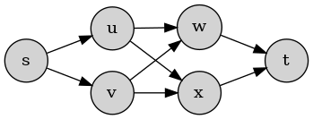
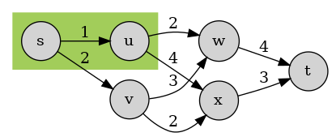

单源最短路径问题
其实各种算法问题，在《算法导论》中已经有了很精确的定义以及严谨的论证了。但是我个人认为，真正理解一个算法，除了严谨的符号运算之外，还要有一些粗颗粒的认知作为引子，从而能够在必要的时间串起整个论证过程。所以我写下这篇博客，也是对自己认知的检验，如果有幸能被更多人看到，那自然再好不过。
当然，减少严谨的符号运算，并不意味着完全不出现符号，因为算法本身就是对问题的抽象，剥掉这层抽象，就没办法进行架构在抽象之上的信息传递了。
Table of Contents

问题描述及定义
单源最短路径问题，旨在求解带权有向图（weighted directed graph）中1，从某个点（vertex）出发，到图中任意一点的最短距离，某些情况下，还需要找出这一条最短距离的路径，称之为最短路径，若无特殊指明且不致歧义，以下最短路径问题均指代单源最短路径问题。
更严格一些，设\(G(V, E)\)表示带权有向图，\(w : E \to \mathbb{R}\)表示权重，路径\(p = \left <v_0, v_1, ... v_k\right >\)的距离定义为： \[ W(p) = \sum\limits_{i = 1}^k w(v_{k-1}, v_k) \] 其中， \[ \begin{gather*} \forall i \in [0, k], v_i \in V \\ \forall i \in [1, k], (v_{i-1}, v_i) \in E \end{gather*} \] 我们从某一点\(s\)（叫作起点，或者源点）出发，记其到图中任意一点\(v\)的最短路径距离为\(\delta(v)\)，单源最短路径求解的就是任意一条从\(s\)到\(v\)的路径\(p\)，使得\(W(p) = \delta(v)\)。
为了方便，我们为每一个点\(v \in V\)设立一个中间变量\(d\)，用\(v.d\)来表示求解过程中的最短距离的可行上界，也就是说始终有\(\delta(v) \leq v.d\)，算法初始化时，\(v.d = +\infty\)，算法运行过程中，我们通过寻找路径使\(v.d\)这个上界不断减小，直到\(v.d = \delta(v)\)。
解决思路
最短路径问题（包括多源最短路径问题）都隐含着一个最优子结构（optimal substructure），即：
如果\(p\)是一条连接两个点的最短路径，那么\(p\)的任意一条子路径，一定也是连接其两个端点的最短路径。
这条性质可由反证法轻松得到，也将是后续寻找最短路径所需要理解的一个重要概念。
正文之前
负权边
负权边指的是图中某些边的权重为负。虽然负权边不会对最短路径的最优子结构性质产生任何影响，但是后面我们会看到，负权边会导致Dijkstra算法失效。
负权环路
负权环路指的是图中某些边构成一条环路（loop），并且这条环路上的所有边的权重相加结果为负。
一旦从起点可以到达这个环路上的点，那么最短路径问题就变得没有意义了：我们可以不断重复地走这条环路，然后 “拐出” 环路，到达目标点，使得到达目标点的路径的权重变得任意小（arbitrarily short），所以也就不存在什么 “最短路径” 了。
一个成熟的算法应当能够检测出图中是否有可以由\(s\)到达的负权环路，如果没有，则算法照常进行；如果有，应予以通报。
非负权环路
非负权环路指的是图中某些边构成一条环路，并且这条环路上的所有边的权重相加的结果大于等于0。
负权环路会使最短路径问题没有意义，那么非负权环路呢？或者说，最短路径是否包含非负权环路呢？
答案是否，如果一条最短路径包含了非负权环路，我们大可将这段环路从路径中 “拿掉”，得到的路径和原路径可以达到同样的终点，并且新路径的权重不大于原路径的权重。
放缩操作
放缩操作的对象是边，对于边\((u,v)\)，放缩操作将检测能否优化点\(v\)的上界：
RELAX(u, v, w):
if v.d > u.d + w(u, v):
v.d = u.d + w(u, v)
v.predecessor = u即如果路径\(s \sim u \to v\)的长度小于当前\(v\)的上界，我们便可以借此优化\(v\)的上界，并同时通过将的\(v\)前继设为\(u\)来记录这一次优化。
解决方法
Bellman-Ford算法
Bellman-Ford算法是最短路径问题中最为robust的一种了，能处理负权边、能检测负权环路、不要求当前图为有向无环图（directed acyclic graph）。Bellman-Ford算法基本框架如下：
- 原图中存在可由起点抵达的负权环路，返回 false，用以告知存在负权环路，最短路径问题无意义
- 原图中不存在可由起点抵达的负权环路，返回 true，用以告知最短路径问题已解决，并将结果蕴含在相应的数据结构中
// 算法主体
for i = 1 to |V| - 1
for each edge (u, v) in E
RELAX(u, v, w)
// 检测是否存在负权回路
for each edge (u, v) in E
if v.d > u.d + w(u, v)
return false
return true算法主体
我们不妨先假设原图中不存在负权环路，先思考Bellman-Ford在解决最短路径问题时的正确性。
根据以上的讨论，任意一点的最短路径中不存在环，故任意一点\(t\)的最短路径最多由\(|V|-1\)条边，\(|V|\)个点构成。设： \[ p=\left <v_0,v_1, ... v_k\right >，其中v_0 = s，v_k = t \] 在寻找\(t\)的最短路径时，任一\(v \in \{u | (u,t) \in E, u.d = \delta(s, u)\}\)（即此时\(v\)的最短路径已找到，且点\(v\)有一条连向点\(t\)的边） ，都是\(v_{k-1}\)（也就是\(t\)在其最短路径中的前继）的一个候选，我们需要证明的是，\(t\)的实际前继能够在Bellman-Ford算法运行之下被发现，从而被真正地选为\(t\)的前继。
根据前面的讨论，路径\(p\)的前缀\(\left <v_0, v_1\right >, \left < v_0, v_1, v_2\right >...\)分别是\(v_1, v_2, ...\)的最短路径，在外侧第一轮for-loop后，边\((v_0, v_1)\)一定会被放缩，而由于\(\left <v_0, v_1\right>\)实际是最短路径，故放缩之后，\(v_1.d = \delta(v_1)\)且将不再变化（因为这已经是最小）；在外侧第二轮for-loop后，边\((v_1, v_2)\)一定会被放缩，而由于\(\left <v_0, v_1, v_2\right>\)实际是最短路径，故放缩之后，\(v_2.d = \delta(v_2)\)且将不再变化（因为这已经是最小）\(\dots\)如此放缩\(k\)轮后，我们便寻找到了\(v_1, ... v_k\)一众节点的最短路径以及其最短路径的前继。
负权环路检测
至于负权环路检测部分的正确性，则不得不引入一些公式，但其实并不复杂。
假设原图存在可由到达的负权环路\(c = \left <v_0, v_1, ... v_k\right >, v_0 = v_k\)，其中，\(W(c) = \sum_{i=0}^{k-1}w(v_i, v_{i+1}) < 0\)。运用反证法，即假设最终不存在\((u,v)\)，使得\(v.d > u.d + w(u, v)\)，则有： \[ \begin{aligned} v_i.d &\leq v_{i-1}.d + w(v_{i-1}, v_i), \forall i \in [1, k] \Rightarrow \\ \sum_{i=1}^k v_i.d &\leq \sum_{i=1}^k (v_{i-1}.d + w(v_{i-1},v_i)) \\ v_k.d + \sum_{i=1}^{k-1} v_i.d &\leq v_0.d + \sum_{i=1}^{k-1} v_{i}.d + \sum_{i=1}^k w(v_{i-1},v_i) \\ 0 &\leq \sum_{i=1}^k w(v_{i-1},v_i) = W(c) \end{aligned} \] 与\(W(c) < 0\)矛盾，故得证。
Dijkstra算法
Dijkstra算法相对于Bellman-Ford算法来说，可以在时间复杂度上有所优化，但是能够处理的情形也就少了一些：Dijkstra算法不能处理负权边（所以更不用提负权环路了）。Dijkstra算法基本框架如下：
- 维持一个点集\(S\)，点集\(S\)由最短路径已确定的点构成；
- 不断向中加入能够确定最短路径的点，直到所有中的点都被加入。
S = {}
Q = G.V
while Q is not empty
u = EXTRACT-MIN(Q)
add u to S
for each v in G.adj[u]
RELAX(u, v, w)当然，难点在于如何根据\(S\)找出能够确定最短路径的点。寻找到一个点的最短路径的必要条件是：在对到达这个点的最短路径中的前继节点进行放缩操作时，该前继节点的最短路径已经确定，而点集\(S\)，正是一个最短路径已经确定的点的集合。

\(\forall u \in S\)且\((u, t) \in E\)，对\((u, t)\)进行放缩后得到的值\(t.d\)，都是\(\delta(t)\)的一个备选，\(S\)中每加入一个点\(v\)（非\(t\)的点），若边\((v,t)\)存在，对该边进行放缩后，\(\delta(t)\)的备选（也就是放缩后的\(t.d\)）就会多一个，而\(\delta(t)\)自然是这些备选中最小的那个。而当\(t\)的最短路径确定后，便可以将\(t\)加入到点集\(S\)中，\(S\)不断扩展，直至最终包含整个点集\(V\)，也就是所有点的最短路径都被找到。
之前提到过，Dijkstra算法不能处理负权边的情况，但上述 Dijkstra算法的讨论中似乎也没有涉及到负权边，为什么它就不能处理了呢？并且，我们只知道放缩后\(t.d\)的是\(\delta(t)\)的备选，那么对\(t.d\)的放缩要进行到什么时候，才能确认\(t.d=\delta(t)\)呢？Dijkstra算法告诉我们，\(\forall u \in V - S\)，有\(t.d \leq u.d\)时，\(\delta(t) = t.d\)，也就是当\(t\)的上界小于所有待确认点\((V-S)\)的上界时，我们就能确定\(t\)的最短路径，也就能够将点\(t\)加入到\(S\)中。
为什么？如果没有负权边，我们可以会发现，\(\forall u \in V - S\)，其上界\(u.d\)总是由放缩操作得到的，所以在算法运行过程中，它必然是单调递减的，而且它代表了一条具体的到达\(u\)的路径。但为什么\(V - S\)中的所有点的上界的最小值，却能够成为某个特定点\(t\)的最短路径呢？
我们来看看\(t\)的上界成为最小上界的之前之后都发生了什么，换言之，在此之前，或者在此之后，\(t.d\)有没有可能更小？之前是不会更小了，因为我们说过，\(t.d\)是单调递减的；那么之后呢？如果在\(t\)的上界成为\((V-S)\)中的最小上界、从而被加入\(S\)之后，我们在新的某一轮中选取另外一个点\(u \in V - S\)，作为此轮加入\(S\)的点，在随后的操作中\(t.d\)会不会因为某个由\(u\)出发的放缩操作继续减小呢？
不会的，对于某个新加入的点\(u\)，\(\delta(u)\)必然不小于任何一个\(S\)中的点的最短距离。运用数学归纳法，假设某一时刻\(S\)按加入顺序排列为\(\{ u_0, \dots, u_k \}\)，且有\(u_0.d \le \dots \le u_k.d\)。若\(u\)是由\(u_k\)“引荐”进来（也就是说进行了\(RELAX(u_k, u, w)\)操作）的，则必有\(u.d = u_k.d + w(u_k, u) \ge u_k.d\)；而若\(u\)是由非\(u_k\)的某个\(u_i\)引荐而来，则也必然应该有\(u.d \ge u_k.d\)，运用反证法：如果\(u.d < u_k.d\)，则在我们的算法中，\(u\)至少应该在选择\(u_k\)加入的一轮中，因优于\(u_k\)被加入，和\(S\)的当前情况矛盾，从而得证。
而如果有负权边，则不能保证在后续加入的点的最短距离单调递增，故不能用以上论证来证明Dijkstra算法的正确性了。何况，这种情况下，强行使用Dijkstra算法，很轻易地就能举出反例来证明结果的错误，比如对下图以\(s\)为起点应用Dijkstra算法，就会得到错误结果：
当然我们也得证明，每一轮加入新点\(t\)时，\(t.d = \delta(t)\)，因为此时虽然\(t.d\)达到整个算法流程中的最小，但这个最小值尚未被证明等于\(\delta(t)\)。但正如前面所说：
寻找到一个点的最短路径的必要条件是：在对到达这个点的最短路径中的前继节点进行放缩操作时，该前继节点的最短路径已经确定，而点集\(S\)，正是一个最短路径已经确定的点的集合。
我们可以使用数学归纳法，来证明\(S\)始终是一个最短路径已经确定的点的集合，也就是说，假设此时\(S\)是一个最短路径已经确定的点的集合，加入\(t\)后，\(S'\)依然保持它的性质。\(t\)前继的候选无非就是图中所有点，我们已经证明，\(t.d\)不可能再由于\(V-S\)中的点放缩而变小了，所以\(t\)在最短路径中的前继只可能来自于\(S\)，而\(t.d\)正是由\(S\)中的点放缩而来，故\(t.d\)正式所有可能中最小的那一个，证毕。
有向无环图中的最短路径
有向无环图，从定义上就排除了负权环路存在的可能，故所有点的最短路径必然存在，问题就在于如何寻找到这些最短路径。
我们当不能对其直接应用Dijkstra算法，因为有向无环图并不排除负权边存在的可能——那就直接用Bellman-Ford算法咯？
也不尽然。有向无环图显然只是Bellman-Ford算法能够处理的情况中的一小部分，并且这一小部分具有一些特殊的性质：无环。设任意一点\(t\)的最短路径为\(\left <v_0, v_1, ... v_k\right >\)，其中\(v_0 = s，v_k = t\)，既然不存在环路，从起点\(s\)出发，只要沿着边走，一步一步放缩，必然是先放缩边\(\left <v_0, v_1\right >\)并由此得到\(v_1.d = \delta(v_1)\)；然后放缩边\(\left <v_1, v_2\right >\)并由此得到\(v_2.d = \delta(v_2)\)……如此放缩\(k\)轮后，我们便按顺序寻找到了\(v_1, ... v_k\)一众节点的最短路径以及其最短路径的前继。
“沿着边走” 有一个专业名词，叫做按拓扑顺序遍历。事实上，我们放缩过边\((v_{i-1}, v_i)\)之后，并不一定要马上放缩边\((v_i, v_{i+1})\)，只要我们能够保证\((v_i, v_{i+1})\)一定在\((v_{i-1}, v_i)\)之后放缩即可，至于中间是否穿插其他边的放缩操作，都无所谓。而拓扑顺序正是满足上述性质的一组顺序，为了得到一组拓扑顺序，我们需要对原图进行拓扑排序，然后按照得到的拓扑顺序进行放缩。
如何进行拓扑排序呢？实际很简单，首先对原图进行深度优先遍历（还有一种基于入度的拓扑排序，此处不表），将完成遍历的点依次插入队列的首部，便可得到按照拓扑顺序排列的一个队列，拓扑顺序的实际意义是，如果边\((u,v)\)存在，那么对点\(u\)的访问必须先于对点\(v\)的访问。我们每次从队列中取出一个点，并对从其出发的所有边进行放缩操作即可。虽说拓扑顺序是对点的一个排序，但从该点出发的边和这个点是关联的，所以，先访问点，也就相当于先访问从这个点出发的边了，我们先\(v_{i}\)访问，也就必然先于\((v_i,v_{i+1})\)放缩\((v_{i-1},v_i)\)。
对比
| 条目 | Bellman-Ford | Dijkstra | DAG |
|---|---|---|---|
| 复杂度 | \(\Theta(|V| |E|)\) | \(\Theta(|E| \log |V|)\) | \(\Theta(|V| + |E|)\) |
| 条件 | - | 无负权边 | 有向无环 |
无向图可以很便捷的转换为带权有向图。↩︎